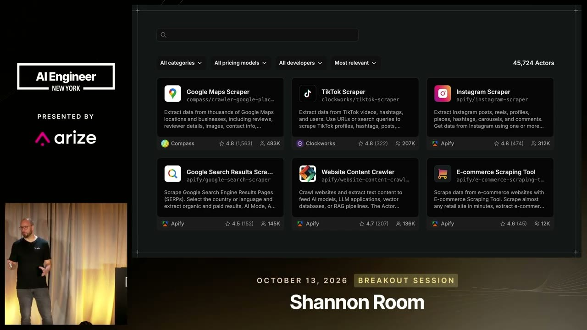

Thirteen payment protocols in eighteen months
Apify runs a store of scraping, extraction, and automation tools called Actors. Curn puts the catalog at roughly eight thousand tools on stage, while his live store screenshot shows 45,724 Actors, and notes that Apify paid creators almost $2 million in the prior month alone. Because unattended agents tackling longer jobs eventually need a budget to buy external tools and data, Apify wants agent payments to become a standard distribution channel.
Eighteen months earlier in San Francisco, Curn was nearly alone in talking about agent payments. Since then, major card networks, fintechs, and crypto platforms have flooded the space with competing standards, chasing analyst forecasts of a multi-trillion-dollar machine B2B economy by 2028. His timeline slide tracks the wave starting from Lightning Labs' L402 in mid-2020 to an April 2025 surge: Mastercard Agent Pay, Coinbase's x402 in May 2025, Skyfire and Visa's KYAPay in June, Google's AP2 and OpenAI and Stripe's ACP in September, Visa's TAP in October, Google and Shopify's UCP and Alipay's ACTP in January 2026, Stripe and Tempo's Machine Payments Protocol (MPP) in March, and April launches from Alipay, UnionPay, and OKX.

“just last month, we paid almost two million dollars to the creators for their actors, right?”00:00:00
- Apify paid tool creators nearly $2 million in a single month and wants agents buying tools directly.
- More than a dozen competing agent payment standards launched between April 2025 and April 2026.
- Card networks, cloud platforms, and crypto exchanges are all vying to own the settlement rail for autonomous agents.
Evidence: transcript 00:00:00, 00:02:26 · watch the protocol timeline
Crypto fits machine micro-payments, yet real volume is $1 million
Curn says he is not a crypto partisan, but argues stablecoin rails solve two economic problems that break card and bank rails for machines. First, traditional per-transaction fees destroy small API calls: his fee comparison slide shows a $0.10 call costs $0.303 on a credit card (2.9% + $0.30) and $0.095 on PayPal Micropayments, compared with roughly $0.002 on Stripe MPP's stablecoin path and $0.001 on Coinbase x402. Second, traditional rails enforce mandatory buyer chargebacks. Human online merchants absorb occasional friendly fraud as a cost of business, whereas an unbounded swarm of agents with chargeback rights could drain a digital service for free. Crypto transfers settle without mandatory cardbacks, leaving refunds optional for the seller.
Unsurprisingly, the two leading technical standards, Coinbase's x402 (garbled in the transcript as "this road too" and "explored") and Stripe's MPP, both settle over crypto. Then Curn puts up the live block-explorer dashboards from x402scan.com and mppscan.com. Across the prior 30 days, x402 processed 2.73 million transactions totaling $1.07 million, and MPP processed $1,430. After a year and a half of protocol launches, real-world volume is close to zero.
“in the last 30 days, on this road too, there was just only like one million dollars. Nobody. And on MPP, only like one point five thousand dollars. I mean, it's basically nothing.”00:04:45
- Credit card minimums and mandatory chargebacks make traditional rails unworkable for sub-dollar machine calls.
- Both Coinbase x402 and Stripe MPP use stablecoins to hit ~$0.001–$0.002 fees without chargebacks.
- Despite strong unit economics, trailing 30-day volume was just $1.07 million on x402 and $1.43 thousand on MPP.
Evidence: transcript 00:04:45 · watch the fee math and volume data
The competition isn't Visa. It's an API key and subsidized tokens.
Low supply is not to blame. Apify, Exa, Perplexity, and Firecrawl already list endpoints in agent payment directories, and Curn notes those companies already collect far more than $1 million a month from agent workloads through ordinary billing. The bottleneck is demand, which he diagnoses across a four-step funnel: need -> setup -> discover -> buy.
At the need step, developers building an agent almost always know upfront which services it requires. Opening an Apify account, saving a credit card once, and dropping an API key or MCP server into the agent's config is simpler than wiring up autonomous per-call payments. Agent payment rails are not losing to Visa; they are losing to static API keys. Worse, subsidized flat-rate LLM subscriptions wreck the build-versus-buy calculus. When a $100 monthly Claude subscription can burn through $14,000 worth of tokens at API list prices, a coding agent has zero incentive to pay pennies for an external tool when it can write bespoke code from scratch at zero marginal cost. Curn expects three shifts to unlock real demand: stronger models trusted with $5 to $500 task budgets, always-on personal agents, and the end of flat-rate token subsidies.
“This is crazy because then the agents have no incentives whatsoever to, you know, to look for existing services because they can build anything from scratch because it costs nothing.”00:07:35
- When tool needs are known upfront, a pre-provisioned account and static API key beat per-call payment protocols.
- Flat-rate $100 subscriptions yielding ~$14,000 in tokens push agents to code tools from scratch instead of buying APIs.
- Demand depends on better models, always-on personal agents, and unsubsidized token pricing.
Evidence: transcript 00:07:35 · watch the API key and subsidy breakdown
Wallet friction and the return of the trusted middleman
Even when a developer wants an agent to buy tools dynamically, setup and discover add friction. Everybody already has a credit card ready, while configuring a crypto wallet still confronts mainstream users with unfamiliar terminology and custody steps. Tooling improves monthly, and Curn expects the real inflection point to come when major agent hosts such as Claude and ChatGPT build wallets straight into their platforms, letting users link bank credentials once and authorize a few dollars of spending.
Once funded, the agent hits discover: how does software verify that an unknown URL promising data will deliver valid output at the advertised price? Human trade solved stranger trust first through personal referrals and later through town squares, marketplaces, reviews, and consumer-protection rules. Agent commerce is recreating those same trust intermediaries through curated directories: verified MCP connector catalogs in Claude, app directories in ChatGPT, and vetted marketplaces like Apify that screen tools before an agent spends money on them.
“same for ChatGPT, they have apps, and Apify is in marketplace as well, so basically there is just a middleman that tells you, okay, this is the service you can trust to know, and you're going to get results.”00:13:19
- Crypto wallet setup remains too cryptic compared with entering a credit card, until major agent platforms embed native funding.
- Autonomous agents cannot tell whether an arbitrary URL will deliver promised results or honor its price.
- Verified connector catalogs in Claude, ChatGPT apps, and marketplaces like Apify act as the trust layer for agent discovery.
Evidence: transcript 00:12:04, 00:13:19 · watch the wallet and discovery section
Why fixed-price HTTP 402 breaks on variable compute jobs
At the buy step, early adopters ran into a protocol mismatch: first-generation agent payment schemes only supported a fixed price per API call. Fixed pricing works for static lookups like a weather forecast, but real automation jobs require variable pay-per-use billing, transcribed as "paper use" in the room recording, because launching a scraper or sub-agent consumes unpredictable compute and LLM tokens.
In baseline x402, a client sends an HTTP request, receives a 402 Payment Required challenge, signs a payment header, and retries; the server verifies and settles the payment on-chain via a facilitator such as Coinbase before returning results. Running an expensive job before settlement risks unpaid compute, while settling upfront requires knowing the exact price before the job starts. When x402 v2 proposed an upto scheme in December 2025, letting the buyer authorize a maximum ceiling while the server settled actual usage later, Apify hit a dealbreaker: because on-chain settlement happened after execution, nothing stopped an agent from double-spending the same wallet funds across multiple calls in the meantime.
“even though like it allowed you to charge random costs, there was not nothing preventing the buyer, the agent, to spend those money wise, you know, because the transaction was only like settled on blockchain later.”00:17:02
- Fixed per-call pricing cannot cover variable compute and LLM workloads whose cost is unknown until completion.
- Standard x402 settles exact amounts upfront via a facilitator before expensive work runs.
- Deferred
uptoauthorization left sellers exposed to buyers spending the same wallet balance twice before on-chain settlement.
Evidence: transcript 00:13:19, 00:17:02 · watch the x402 pay-per-use walkthrough
Overcharge workarounds vs. on-chain escrow and batch settlement
To ship variable pricing without getting double-spent, Apify first built an ugly workaround on top of x402's exact scheme: charge the agent an upfront deposit such as $10, run a job that actually costs $2, and refund the remaining $8 afterward. That protected the seller, but required two on-chain transactions, doubled the fees, and complicated routing refunds back to the originating buyer wallet.
A week before the talk, Apify adopted x402's newer batch-settlement scheme, garbled in the transcript as "Bestelman's" and "Basic Life Insurance Scheme". As shown on Curn's six-step slide (Deposit, Voucher, Verify, Claim, Settle, Refund), the buyer locks ERC-20 funds into an on-chain escrow contract once, then signs cumulative vouchers on each request so the server can verify solvency and respond immediately without waiting for an on-chain transfer; a channel manager later claims and sweeps settled funds in a batch and refunds idle channels. With x402 batch settlement and Stripe MPP sessions closing the technical gap, Curn urges tool builders to design metered agent pricing now before demand arrives.
“So we work around it by using exact refunds, so that you don't be charged like I don't know, like ten dollars upfront, and then you know, I think it was two dollars. And once the board was done, we were handed the rest.”00:17:02
- Charging $10 upfront and refunding $8 solved double-spending at the cost of extra transactions, higher fees, and refund friction.
- x402
batch-settlementlocks ERC-20 funds in on-chain escrow and verifies signed cumulative vouchers per request off-chain. - With variable billing and curated discovery landing, the remaining barriers to agent commerce are economic rather than protocol-level.
Evidence: transcript 00:17:02, 00:13:19 · watch the batch-settlement walkthrough